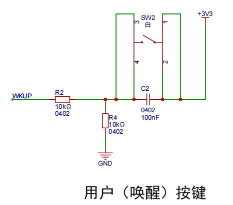
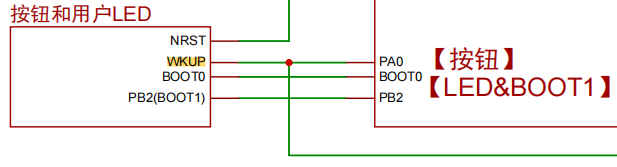
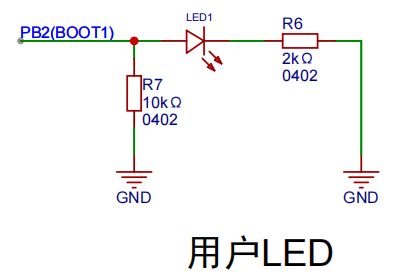
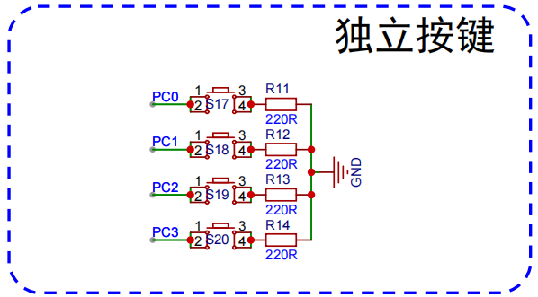
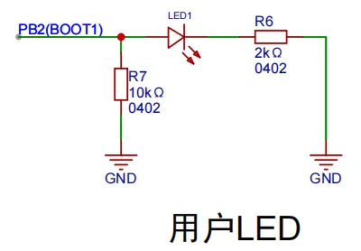
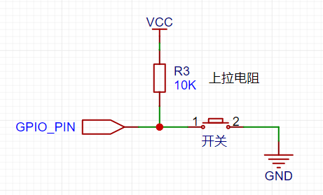
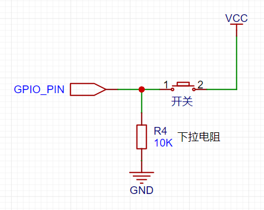
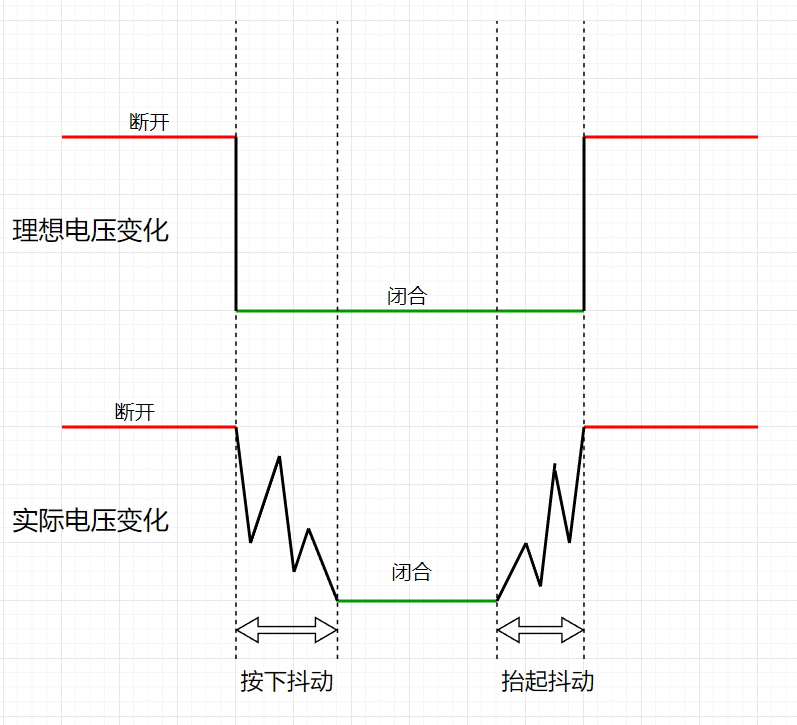
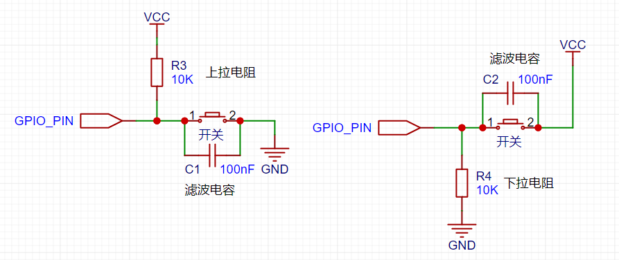

<!DOCTYPE lake>
<h2 data-lake-id="xSD8Q" id="xSD8Q"><span data-lake-id="ueec6e264" id="ueec6e264">学习目标</span></h2><ol list="uc78f656b"><li data-lake-id="uab684b3e" fid="uc62edf79" id="uab684b3e"><span data-lake-id="ub62c8c0a" id="ub62c8c0a">理解GPIO的上拉下拉输入</span></li><li data-lake-id="u0495c6c7" fid="uc62edf79" id="u0495c6c7"><span data-lake-id="u366d4fcd" id="u366d4fcd">理解外部上拉下拉</span></li><li data-lake-id="u8e5be381" fid="uc62edf79" id="u8e5be381"><span data-lake-id="u1d50b284" id="u1d50b284">掌握输入状态的获取</span></li></ol><h2 data-lake-id="FDhWb" id="FDhWb"><span data-lake-id="u05bcd3a6" id="u05bcd3a6">学习内容</span></h2><h3 data-lake-id="oBB6T" id="oBB6T"><span data-lake-id="u041d9218" id="u041d9218">按键点灯一</span></h3><p data-lake-id="u45e68ac4" id="u45e68ac4"></p><p data-lake-id="u3e1548f9" id="u3e1548f9"></p><ul list="u212cf043"><li data-lake-id="u5868136b" fid="u7782cd39" id="u5868136b"><span data-lake-id="u29d0ecf8" id="u29d0ecf8">按下按键，LED1亮</span></li><li data-lake-id="ue78cdfef" fid="u7782cd39" id="ue78cdfef"><span data-lake-id="u6249db22" id="u6249db22">抬起按键，LED1灭</span></li></ul><h4 data-lake-id="lW3Gx" id="lW3Gx"><span data-lake-id="ueb36824e" id="ueb36824e">开发流程</span></h4><ol list="u20c3174a"><li data-lake-id="u565cf4d5" fid="u3b7141e1" id="u565cf4d5"><span data-lake-id="ucb8001d6" id="ucb8001d6">GPIO初始化</span></li><li data-lake-id="u8e4f8e1c" fid="u3b7141e1" id="u8e4f8e1c"><span data-lake-id="u2aecd4e4" id="u2aecd4e4">按键扫描，按下点灯，抬起灭灯</span></li></ol><h4 data-lake-id="Gzx49" id="Gzx49"><span data-lake-id="u784f0df9" id="u784f0df9">输入状态</span></h4><ol list="u2e9876da"><li data-lake-id="u324b96a6" fid="u34f1f2c2" id="u324b96a6"><span data-lake-id="uc254f683" id="uc254f683">默认状态：由电路图决定了，当前按键默认接地，因此默认为低电平。</span></li><li data-lake-id="u6e0e07c5" fid="u34f1f2c2" id="u6e0e07c5"><span data-lake-id="ue7161a6b" id="ue7161a6b">按下按键：3V3导通，输入变为高电平</span></li></ol><p data-lake-id="uf086f9c8" id="uf086f9c8"><span data-lake-id="ubb0a6910" id="ubb0a6910">GPIO初始化，需要考虑到当前引脚的初始状态，初始化配置为不上拉也不下拉。</span></p><p data-lake-id="ue914d035" id="ue914d035"><span data-lake-id="u3ee8fc4b" id="u3ee8fc4b">因此，抬起时，默认为低电平；按下时，为高电平。</span></p><h4 data-lake-id="TPVh7" id="TPVh7"><span data-lake-id="u46179dfa" id="u46179dfa">实现逻辑</span></h4><span class="yuque-card-unsupported">[codeblock]</span><span class="yuque-card-unsupported">[codeblock]</span><h3 data-lake-id="Jr7Ji" id="Jr7Ji"><span data-lake-id="uaddcf02e" id="uaddcf02e">按键点灯二</span></h3><p data-lake-id="ud9e81fe8" id="ud9e81fe8"></p><ul list="ua55007ea"><li data-lake-id="u5234c383" fid="u7782cd39" id="u5234c383"><span data-lake-id="u8503b837" id="u8503b837">按下按键</span><code data-lake-id="u3d01694b" id="u3d01694b"><span data-lake-id="uc15a4bd0" id="uc15a4bd0">PC0</span></code><span data-lake-id="u058c9564" id="u058c9564">，LED1亮</span></li><li data-lake-id="u6a74100a" fid="u7782cd39" id="u6a74100a"><span data-lake-id="uc43c5931" id="uc43c5931">抬起按键</span><code data-lake-id="u47906695" id="u47906695"><span data-lake-id="u769b7a94" id="u769b7a94">PC0</span></code><span data-lake-id="uff06cc4f" id="uff06cc4f">，LED1灭</span></li></ul><h4 data-lake-id="NQSFp" id="NQSFp"><span data-lake-id="uda51f33a" id="uda51f33a">开发流程</span></h4><ol list="u46a03cb4"><li data-lake-id="uef9a1280" fid="u3b7141e1" id="uef9a1280"><span data-lake-id="u59913368" id="u59913368">GPIO初始化</span></li><li data-lake-id="u06388ce2" fid="u3b7141e1" id="u06388ce2"><span data-lake-id="ufc933cdf" id="ufc933cdf">按键扫描，按下点灯，抬起灭灯</span></li></ol><h4 data-lake-id="FnBY3" id="FnBY3"><span data-lake-id="u949df9a3" id="u949df9a3">输入状态</span></h4><ol list="ub1136436"><li data-lake-id="uc4993b32" fid="u34f1f2c2" id="uc4993b32"><span data-lake-id="u9df9cdbd" id="u9df9cdbd">默认状态：由电路图决定，当前按键通过开关接地，因此默认什么都没有接，</span><strong><span data-lake-id="uefaf3a1e" id="uefaf3a1e">默认状态不确定</span></strong><span data-lake-id="u59624d2f" id="u59624d2f">。</span></li><li data-lake-id="uee332666" fid="u34f1f2c2" id="uee332666"><span data-lake-id="u94a22981" id="u94a22981">按下按键，开关导通接地，输入变为</span><strong><span data-lake-id="ufbaef636" id="ufbaef636">低电平</span></strong></li></ol><p data-lake-id="u57b6f9a3" id="u57b6f9a3"><span data-lake-id="u2c73a098" id="u2c73a098">GPIO初始化，需要考虑到当前引脚的初始状态，初始化配置为</span><strong><span data-lake-id="ue2919c67" id="ue2919c67">上拉</span></strong><span data-lake-id="uef029b00" id="uef029b00">，给一个默认的状态。</span></p><p data-lake-id="u8c8fdf74" id="u8c8fdf74"><span data-lake-id="u4449373d" id="u4449373d">因此，抬起时，默认为高电平；按下时，为低电平。</span></p><h4 data-lake-id="SDlOu" id="SDlOu"><span data-lake-id="uc381b591" id="uc381b591">实现逻辑</span></h4><span class="yuque-card-unsupported">[codeblock]</span><span class="yuque-card-unsupported">[codeblock]</span><h3 data-lake-id="KmrOD" id="KmrOD"><span data-lake-id="ud67409bb" id="ud67409bb">完整代码</span></h3><span class="yuque-card-unsupported">[codeblock]</span><p data-lake-id="uf9383240" id="uf9383240"><br/></p><h2 data-lake-id="B6oso" id="B6oso"><span data-lake-id="u163a2f77" id="u163a2f77">按钮输入的接线方式</span></h2><h3 data-lake-id="fmkjB" id="fmkjB"><span data-lake-id="ufcba5e49" id="ufcba5e49">上拉电阻</span></h3><p data-lake-id="u78903b57" id="u78903b57"><span data-lake-id="u39b89ccd" id="u39b89ccd">IO口默认为高电平，按钮按下导通拉低</span></p><p data-lake-id="u4350eaad" id="u4350eaad"></p><h3 data-lake-id="OsFFU" id="OsFFU"><span data-lake-id="ufb7d855e" id="ufb7d855e">下拉电阻</span><span data-lake-id="u0d4e9cb7" id="u0d4e9cb7">​</span></h3><p data-lake-id="u3d56e50e" id="u3d56e50e"><span data-lake-id="u48307d33" id="u48307d33">IO口默认为低电平，按钮按下导通拉高</span></p><p data-lake-id="u256aaae3" id="u256aaae3"></p><p data-lake-id="u38e37a91" id="u38e37a91"><span data-lake-id="u61a872bc" id="u61a872bc">​</span><br/></p><h2 data-lake-id="zjg5S" id="zjg5S"><span data-lake-id="u0fc56711" id="u0fc56711">消除抖动</span></h2><p data-lake-id="u9e0b5671" id="u9e0b5671"><span data-lake-id="u464b004c" id="u464b004c">由于按键在按下或释放时，有机械弹性的影响，会产生一些触点的电平抖动，抖动时长与按钮本身有关，通常为5ms-10ms，如果在抖动期间检测高低电平，会导致判断错误或重复判断。我们必须进行消抖操作，消抖又分为硬件消抖和软件消抖，两者可单独使用也可合并使用。</span></p><p data-lake-id="ua2ff7c6b" id="ua2ff7c6b"></p><h3 data-lake-id="g3MZc" id="g3MZc"><span data-lake-id="u57238b8f" id="u57238b8f">硬件消抖</span></h3><p data-lake-id="u78ccca59" id="u78ccca59"><span data-lake-id="u5797225e" id="u5797225e">为按钮两边添加滤波电容，可以实现消抖目的</span></p><p data-lake-id="u66b40ce6" id="u66b40ce6"></p><h3 data-lake-id="x7z7T" id="x7z7T"><span data-lake-id="ubc41b661" id="ubc41b661">软件消抖</span></h3><ul list="udf76dd9f"><li data-lake-id="uc0b5f08a" fid="uafb48c82" id="uc0b5f08a"><span data-lake-id="ubff1adc5" id="ubff1adc5">在代码判定时，主动延时10ms左右再判断</span></li><li data-lake-id="uda19cfcf" fid="uafb48c82" id="uda19cfcf"><span data-lake-id="u1e6a7906" id="u1e6a7906">使用嘀嗒定时器，记录并判断高低电平变化的间隔时间</span></li></ul><h2 data-lake-id="pnSp3" id="pnSp3"><span data-lake-id="u15867aa5" id="u15867aa5">练习题</span></h2><ol list="ub7029728"><li data-lake-id="u1af02aa1" fid="u5cbc9d30" id="u1af02aa1"><span data-lake-id="ue5d5062c" id="ue5d5062c">实现4个独立按键的点灯</span></li></ol>